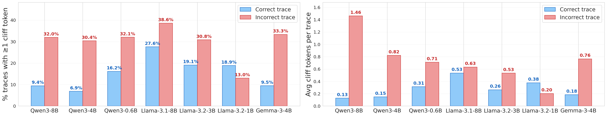
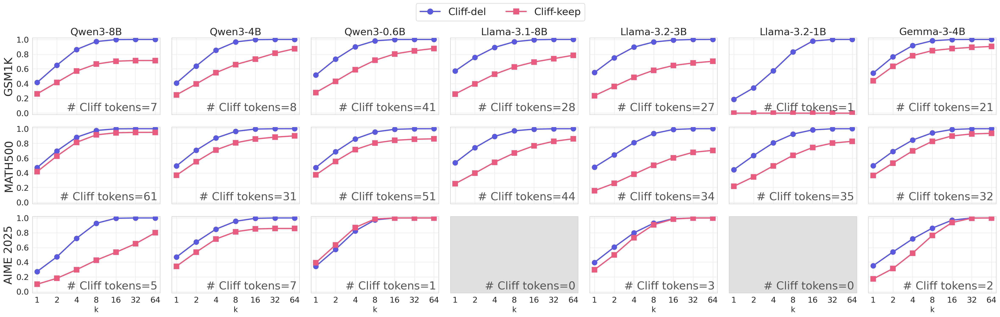
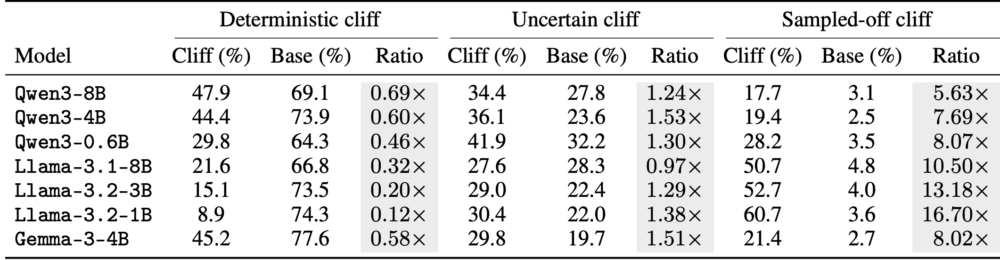
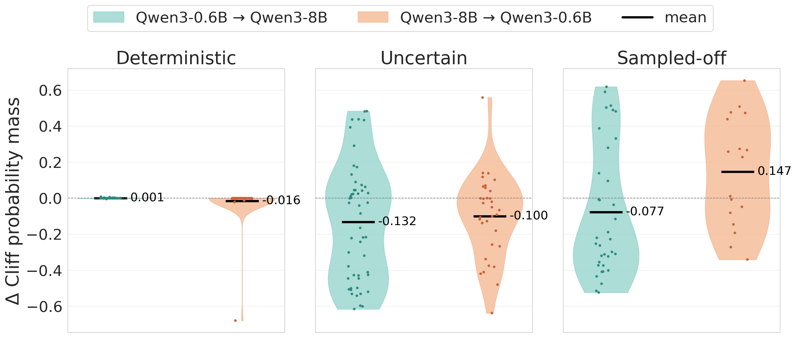
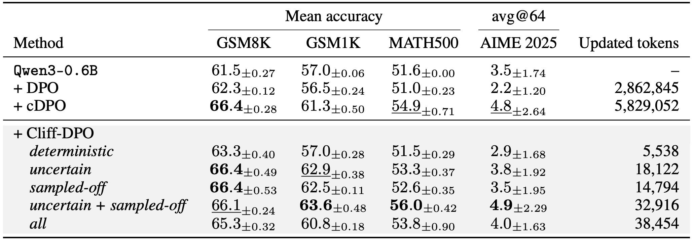

Deterministic cliff
A greedy token with low entropy. The model samples the cliff token with near-absolute certainty.
arXiv 2026
Identifying Single-Token Failure Triggers in LLM Mathematical Reasoning
1Seoul National University 2Boston University
†Corresponding author
Token-wise potential is the probability that a reasoning process reaches the correct answer, conditioned on the partial trace generated up to a token position. Empirically, we estimate it by rolling out continuations from each prefix and measuring the success rate.
A cliff token is a token where token-wise potential drops significantly from the previous prefix. Before this token, the trace may remain recoverable; after the token is fixed, continuations are more likely to end in failure.
To distinguish statistically significant shifts from rollout noise, the detection criterion uses an adaptive threshold based on a one-sided two-proportion z-test. We use N = 64 rollouts per token position, extending potential-based analysis from coarse trace segments to token-level resolution.
Cliff tokens occur more often in incorrect traces, and deleting the first cliff token can restore reasoning. Across seven instruction-tuned models on GSM1K, MATH500, and AIME 2025, incorrect traces are more likely to contain cliff tokens and have higher average cliff-token counts in most model settings.


Cliff tokens exhibit distinct probabilistic structure. Token entropy and token greediness separate them into three failure modes: confident bias, competitive uncertainty, and stochastic sampling noise.
A greedy token with low entropy. The model samples the cliff token with near-absolute certainty.
A greedy token with high entropy. The greedy cliff token is sampled despite high uncertainty.
A non-greedy token with high entropy. The non-greedy cliff token is sampled stochastically.

The cliff taxonomy changes with model family and scale. Deterministic cliffs are largely scale-invariant, while uncertain cliffs reflect model-specific gaps and sampled-off cliffs show scale-asymmetry.

Cliff positions can also provide targeted supervision. Cliff-DPO applies preference optimization at the token position where the reasoning trace diverges into failure.

@article{ko2026clifftoken,
title={Cliff Tokens: Identifying Single-Token Failure Triggers in LLM Mathematical Reasoning},
author={Ko, Jaeyong and Kang, Pilsung and Lee, Yukyung},
journal={arXiv preprint arXiv:2606.25524},
year={2026},
eprint={2606.25524},
archivePrefix={arXiv}
}